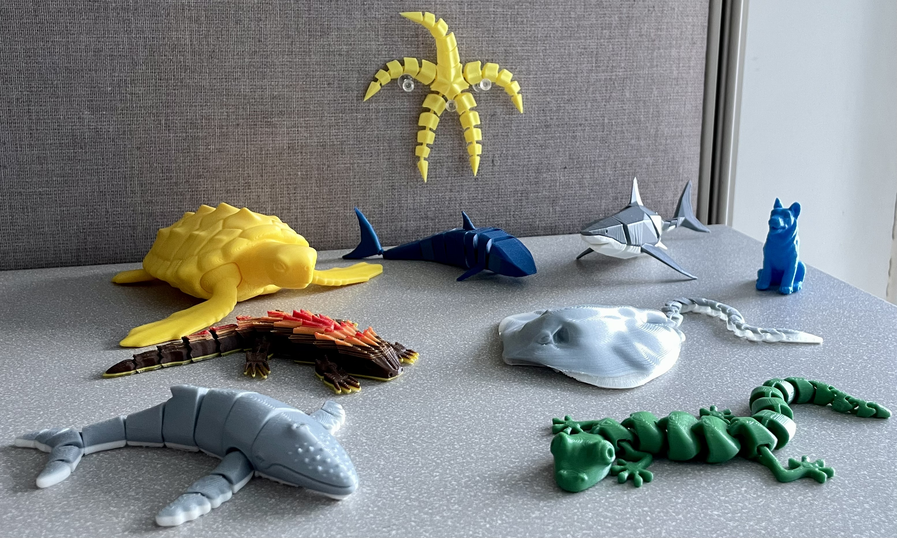
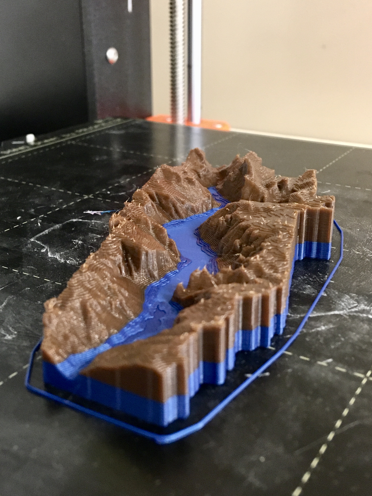
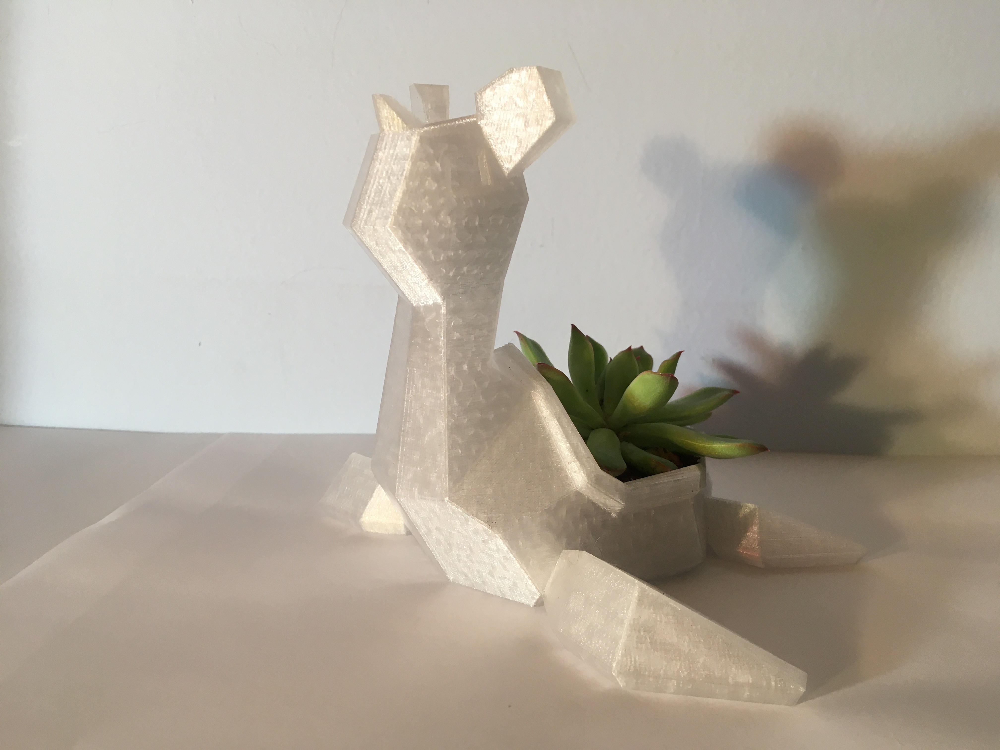
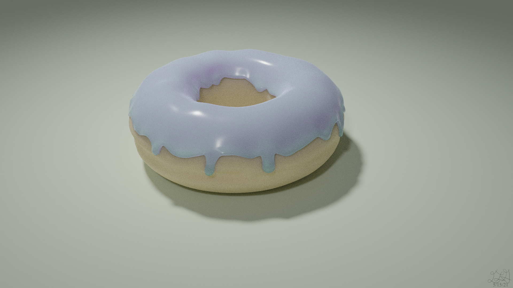

Website Design
I've been interested in website design and development since I took a class in high school. In fall 2021, I took a website design course at my college. This website here was initially built at the beginning of summer 2021 to refresh myself with HTML, CSS, and JavaScript. I last this website in Fall 2023 🙂
3D prints
The .stl files for prints here were obtained from thingiverse. However, I have made some prints that I designed. For 3D printing, I used the PrusaSlicer in the physics department at my college, except for the blue gsd print (from high school). Scroll on the picutres to see more!



3D designs
For 3D design, I've been using Blender and the Wacom Intuos Creative Pen Tablet. Scroll on the picutres to see more!

